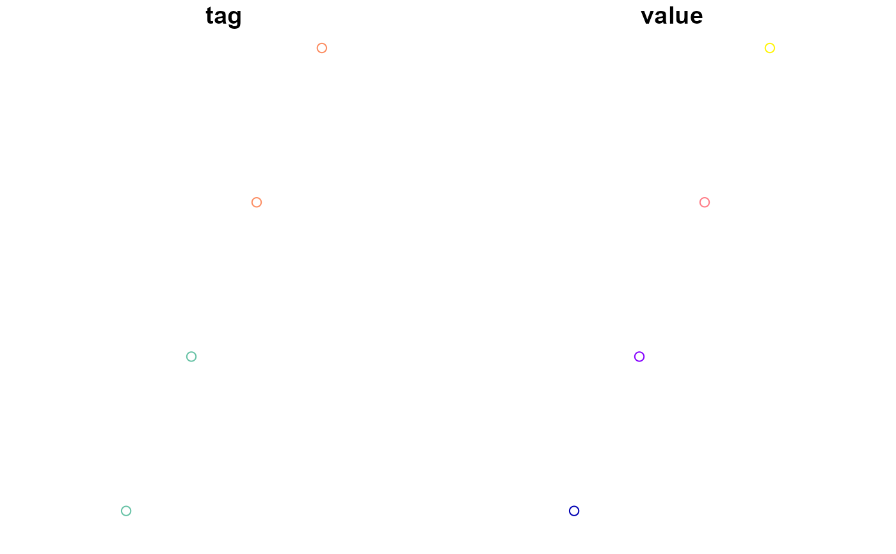
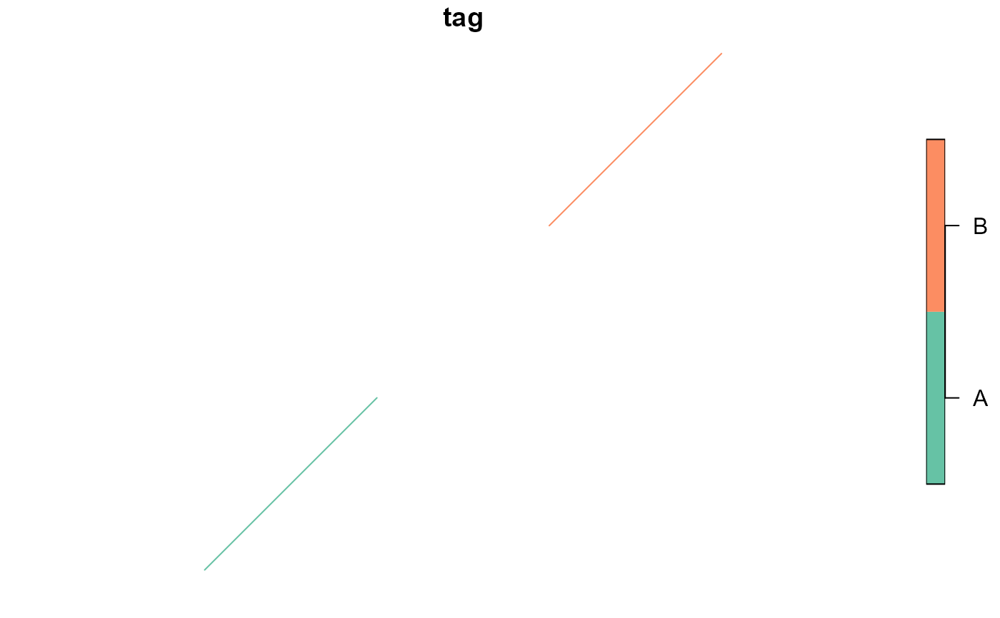

Convert a data.frame or data.table to an simple feature (sf) object
Source:R/fun_as_sf.R
atl_as_sf.RdThis function converts a data.frame or data.table to a simple feature (sf) object, allowing flexible specification of the x and y coordinate columns. Additional attributes can also be retained in the resulting sf object. There are four options = c("points", "lines", "table", "res_patches").
Usage
atl_as_sf(
data,
tag = "tag",
x = "x",
y = "y",
projection = sf::st_crs(32631),
additional_cols = NULL,
option = "points",
buffer
)Arguments
- data
A
data.tableor an object convertible to adata.table. The input data containing the coordinates and optional attributes.- tag
A character string representing the name of the column containing the tag ID.
- x
A character string representing the name of the column containing x-coordinates. Defaults to "x".
- y
A character string representing the name of the column containing y-coordinates. Defaults to "y".
- projection
An object of class
crsrepresenting the coordinate reference system (CRS) to assign to the resulting sf object. Defaults to EPSG:32631 (WGS 84 / UTM zone 31N).- additional_cols
A character vector specifying additional column names to include in the resulting sf object. Defaults to
NULL(no additional columns included).- option
A character string with "points" (default) for returning sf points, "lines" to return sf lines and "table" to return a table with a sf coordinates column or "res_patches" to return sf polygons with residency patches. For the latter, it is best to specify the buffer around points to half of
lim_spat_indepof the residency patch calculation. If not the function can create MULTIPOLGONS for single residency patches. That will give a warning message, but works if desired.- buffer
A numeric value (in meters) specifying the buffer around the polygon of each residency patch, which should be the same as
lim_spat_indepof the residency patch calculation or larger. Otherwise some patches will be multiple polygons.lim_spat_indepof the residency patch calculation.
Examples
library(data.table)
# Example data
data <- data.table(
tag = c("A", "A", "B", "B"),
x = c(10, 20, 30, 40),
y = c(50, 60, 70, 80),
value = c(100, 200, 300, 400)
)
# Convert to sf points with custom CRS and retain the "value" column
sf_points <- atl_as_sf(data,
x = "x", y = "y", tag = "tag",
projection = sf::st_crs(4326),
additional_cols = "value"
)
plot(sf_points)

# Convert to sf lines
sf_lines <- atl_as_sf(data, x = "x", y = "y", tag = "tag", option = "lines")
plot(sf_lines)

# Convert to a data.table with coordinates column
sf_table <- atl_as_sf(data, x = "x", y = "y", tag = "tag", option = "table")
print(sf_table)
#> tag geometry
#> <char> <sfc_POINT>
#> 1: A POINT (10 50)
#> 2: A POINT (20 60)
#> 3: B POINT (30 70)
#> 4: B POINT (40 80)